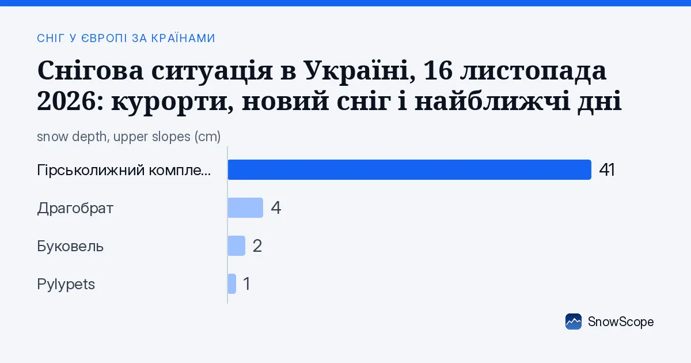

Україна втратила 3 440 км² снігу за тиждень: високі гребені залишилися білими
На Драгобраті, висотою 1 706 м на Гориганах, глибина снігу становить лише 4 см – ознака постійного танення в горах України. Однак вище 1 500 м картина зовсім інша: 89% території тут ще має снігопокриття, і нові снігопади надходять цього тижня.
Дивіться сніговий прогноз для Гірськолижний комплекс "Плай" у застосунку SnowScopeВисота снігу, сповіщення та 3D-карта, безкоштовно.
Один тиждень втрат
Сім днів тому Україна мала 5 090 км² снігопокриття на високогірних територіях. На 16 листопада це впало до лише 1 650 км² – втрата 3 440 км². Танення було нерівномірним: лише вчора 480 км² зникло за 24 години.
Ось що робить пізньоосіннього потепління в сухих гірських регіонах. Повітря прогрівається вище нуля. Тонкий ранньосезонний снігопокрив, відкладений нещодавно, містить мало води. Танення прискорюється від основи вгору, де грунт та скелі прогрівають швидше за повітря. За кілька днів лише найвищі схили залишаються білими. Це типова картина в сухих горах: тонкий ранньосезонний сніг тане швидко, коли теплий фронт проходить перед настанням справжної зими.
| Курорт | Висота снігу | Новий сніг, 72 год | Найближчі дні | Вершина |
|---|---|---|---|---|
| Гірськолижний комплекс "Плай" | 41 cm | 0 cm | 0 cm | 1 048 m |
| Драгобрат | 4 cm | 4 cm | 12 cm | 1 706 m |
| Буковель | 2 cm | 1 cm | 2 cm | 1 370 m |
| Pylypets | 1 cm | 1 cm | 2 cm | 1 165 m |

Лінія снігу та те, що залишилось
Лінія снігу зараз знаходиться на висоті 1 400 м. Усе нижче – майже оголено. У смузі від 500 до 1 000 м снігопокриття становить лише 2% і середня глибина – нуль. Між 1 000 та 1 500 м ситуація дещо краща: покриття – 25%, середня глибина – 1 см. Але вище 1 500 м картина різко змінюється. Тут 89% території України ще має снігопокриття, зі середньою глибиною 3 см.
Три основні гребені – Borzhava, Gorgany та Chornohora – усі отримали 4–6 см свіжого снігу за останні три дні. Саме там гори найкраще утримали снігопокриття.
Розподіл снігу за висотою
Контраст очевидний, коли подивитися на висотні смуги. На 500–1 000 м майже не залишилось снігу: 2% покриття, нульова глибина. На 1 000–1 500 м покриття розріджене: 25%, 1 см глибини. На 1 500–2 000 м це суцільне: 89% покриття, 3 см глибини. Для гірськолижників повідомлення ясне: висота – це все, що має значення зараз. Йди вище або залишайся вдома. Кожні 500 метрів набору висоти – інший світ.
Чотири курорти, два цікаві
На 16 листопада лише чотири з 20 гірськолижних курортів України мають виміряний сніг на землі. Плай має найбільше – 41 см. Він розташований на висоті 1 048 м у захищеній долині, яка зберегла старіший сніг від попередніх штормів. За останні три дні він не отримав нового снігу, і його ближайший прогноз без змін.
Драгобрат на висоті 1 706 м – той, на якого варто звернути увагу. Зараз тут лише 4 см, але на наступні три дні прогнозується 12 см. Коли прибуде холодна система, сюди й варто їхати. Буковель та Pylypets, обидва нижче, мають по 1–2 см зі слабкими прогнозами.
Поворотний момент настає цього тижня
Танення не припиниться одразу, але поворотний момент наступає цього тижня. На наступні три дні високо в горах може випасти до 7 см нового снігу – за найоптимістичнішими оцінками моделі. 20 листопада буде найснігоніший день прогнозу, з очікуваними 8 см. Це не велика подія, але вона закриє відкриті скелі та зміцнить тонку основу, яка залишилась.
Крім того, перспектива покращується поступово. На наступні сім днів припадає до 25 см снігу в високих горах. Дивлячись далі – з 24 по 30 листопада – модель натякає на щось набагато краще: можливо до 43 см на територію. До того часу весь характер зміниться з ранньосезонного танення на справжній зимовий сніг. Нижчі курорти, зараз оголені до скель, мають почати ставати придатними для катання.
Поради лижникам
- Залишайся вище 1 500 м: 89% території на цій висоті має снігопокриття, порівняно з лише 2–25% нижче. На нижчих схилах видно будуть скелі.
- Драгобрат на висоті 1 706 м – твоя найкраща ставка з 20 листопада. Зараз 4 см, але отримає 12 см, коли прибуде холодний фронт.
- Уникай позатрасного катання перед перевіркою офіційного лавинного бюлетеня. Новий сніг на тонкій основі може бути нестійким на крутих схилах.
- Гребень Borzhava та Chornohora отримали 4–6 см снігу за останні три дні – надай пріоритет цим районам цього тижня, оскільки вони покращуватимуться швидше, ніж нижчі долини.
- Кінець листопада (24–30 листопада) може принести до 43 см снігу. Якщо ти можеш затримати свою поїздку, умови будуть набагато кращими тоді.
About these numbers
Resort snow depths are the deepest snow on the resort's upper slopes from the SnowScope snow model (about 1 km, run of 16 листопада); they are estimates for an area, not a measurement at one point. Station values are measurements on the date shown. Forecasts can change. Always read the official avalanche bulletin before going off-piste.
Cite this report
For research, teaching or the press: the numbers and charts are free to reuse under CC BY 4.0 with this citation.
SnowScope (2026), Україна втратила 3 440 км² снігу за тиждень: високі гребені залишилися білими, https://snowscope.app/blog/uk/2026/11/ukraine-snow-report-16-november-2026.html, accessed 2026-11-16
SnowScope (Atlas Labs). (2026, November 16). Україна втратила 3 440 км² снігу за тиждень: високі гребені залишилися білими. SnowScope snow reports. https://snowscope.app/blog/uk/2026/11/ukraine-snow-report-16-november-2026.html
BibTeX
@misc{snowscope2026ukrainesnowreport16novem,
author = {{SnowScope (Atlas Labs)}},
title = {Україна втратила 3 440 км² снігу за тиждень: високі гребені залишилися білими},
year = {2026},
month = nov,
howpublished = {\url{https://snowscope.app/blog/uk/2026/11/ukraine-snow-report-16-november-2026.html}},
note = {Published 2026-11-16 20:42 UTC; accessed 2026-11-16}
}· CC BY 4.0 · Methods, data and tools →
Гірськолижний комплекс "Плай": snow and temperature by height, this winter vs last (tools) →
Follow Гірськолижний комплекс "Плай"
Безкоштовно: повідомлення, коли йде новий сніг, і прогноз щоранку.